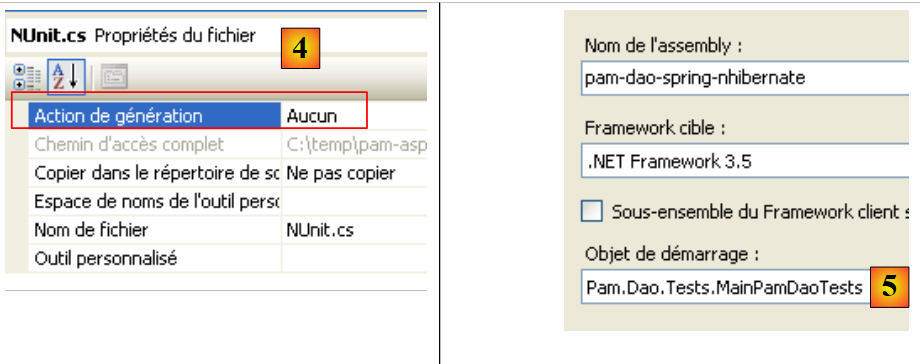
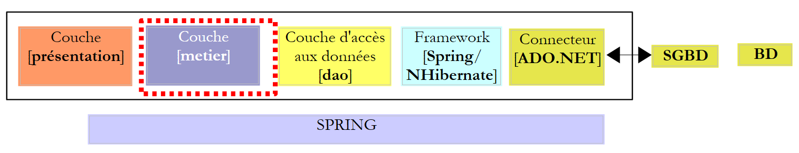
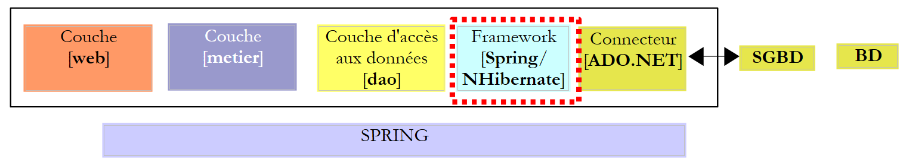

13. The [SimuPaie] application – version 9 – Spring/NHibernate integration
Here, we propose to revisit the three-tier ASP.NET application from version 7 [pam-v7-3tier-nhibernate-multivues-multipages]. The application’s layered architecture was as follows:
 |
In the version above, the [DAO] layer was implemented using the NHibernate framework. The Spring framework was used only for integrating the layers with one another. The Spring framework provides utility classes for working with the NHibernate framework. Using these classes makes the code in the [DAO] layer easier to write. The previous architecture evolves as follows:
 |
Due to the layered structure used, implementing Spring/NHibernate integration requires modifying only the [DAO] layer. The [Presentation] (web/ASP.NET) and [Business] layers will not need to be modified. This is the main advantage of layered architectures integrated with Spring.
In the following sections, we will build the [DAO] layer with [Spring/NHibernate] by commenting on the code of a working solution. We will not attempt to cover all configuration options or uses of the [Spring/NHibernate] framework. Readers can adapt the proposed solution to their own needs using the Spring.NET documentation [http://www.springframework.net/documentation.html] (June 2010).
The approach followed to build the [DAO] and [business] layers is that of version 3 described in paragraph 7. The approach followed for the [presentation] layer is that of version 7 described in paragraph 11.
13.1. The [DAO] data access layer
 |
13.1.1. The Visual Studio C# project for the [dao] layer
The Visual Studio project for the [dao] layer is as follows:
 |
- in [1], the project as a whole
- the [pam] folder contains the project classes as well as the configuration of the NHibernate entities
- the [App.config] and [Dao.xml] files configure the Spring/NHibernate framework. We will need to describe the contents of these two files.
- in [2], the various classes of the project
- in the [entities] folder, we find the NHibernate entities studied in the [pam-dao-nhibernate] project
- In the [service] folder, we find the [IPamDao] interface and its implementation using the Spring/NHibernate framework [PamDaoSpringNHibernate]. We will need to write this new implementation of the [IPamDao] interface
- The [tests] folder contains the same tests as the [pam-dao-nhibernate] project. They test the same [IPamDao] interface.
- In [3], the project references. The Spring/NHibernate integration requires two new DLLs: [Spring.Data] and [Spring.Data.NHibernate12]. These DLLs are available in the Spring.Net framework. They have been added to the [lib] folder of the DLLs [4]:
 |
In the project references [3], you will find the following DLLs:
- NHibernate: for the NHibernate ORM
- MySql.Data: the ADO.NET driver for the MySQL DBMS
- Spring.Core: for the Spring framework, which handles layer integration
- log4net: a logging library
- nunit.framework: a unit testing library
- Spring.Data and Spring.Data.NHibernate12: provide Spring/NHibernate support.
These references were taken from the [lib] folder [4]. Ensure that the "Local Copy" property for all these references is set to "True" [5]:
13.1.2. Configuring the C# project
The project is configured as follows:
 |
- In [1], the project assembly name is [pam-dao-spring-nhibernate]. This name appears in various project configuration files. ### 13.1.3. **Entities in the [dao] layer**
 |
The entities (objects) required for the [dao] layer have been gathered in the [entities] folder [1] of the project. These entities are the same as those in the [pam-dao-nhibernate] project, with one exception in the NHibernate configuration files. Take, for example, the [Employee.hbm.xml] file:
- In [2], the file is configured to be included in the project assembly
Its content is as follows:
<?xml version="1.0" encoding="utf-8" ?>
<hibernate-mapping xmlns="urn:nhibernate-mapping-2.2"
namespace="Pam.Dao.Entities" assembly="pam-dao-spring-nhibernate">
<class name="Employee" table="EMPLOYEES">
<id name="Id" column="ID">
<generator class="native" />
</id>
<version name="Version" column="VERSION"/>
<property name="SS" column="SS" length="15" not-null="true" unique="true"/>
<property name="Name" column="NAME" length="30" not-null="true"/>
<property name="First Name" column="FIRST_NAME" length="20" not-null="true"/>
<property name="Address" column="ADDRESS" length="50" not-null="true" />
<property name="City" column="CITY" length="30" not-null="true"/>
<property name="ZipCode" column="ZIP" length="5" not-null="true"/>
<many-to-one name="Allowances" column="ALLOWANCE_ID" cascade="all" lazy="false"/>
</class>
</hibernate-mapping>
- Line 2: The assembly attribute indicates that the [Employee.hbm.xml] file will be found in the [pam-dao-spring-nhibernate] assembly ### 13.1.4. **Spring / NHibernate Configuration**
Let’s return to the Visual C# project:
 |
- In [1], the [App.config] and [Dao.xml] files configure the Spring / NHibernate integration #### 13.1.4.1. *The [* *App.config] file*
The [App.config] file is as follows:
<?xml version="1.0" encoding="utf-8" ?>
<configuration>
<!-- configuration sections -->
<configSections>
<sectionGroup name="spring">
<section name="parsers" type="Spring.Context.Support.NamespaceParsersSectionHandler, Spring.Core" />
<section name="objects" type="Spring.Context.Support.DefaultSectionHandler, Spring.Core" />
<section name="context" type="Spring.Context.Support.ContextHandler, Spring.Core" />
</sectionGroup>
<section name="log4net" type="log4net.Config.Log4NetConfigurationSectionHandler,log4net" />
</configSections>
<!-- Spring configuration -->
<spring>
<parsers>
<parser type="Spring.Data.Config.DatabaseNamespaceParser, Spring.Data" />
</parsers>
<context>
<resource uri="Dao.xml" />
</context>
</spring>
<!-- This section contains the log4net configuration settings -->
<!-- IMPORTANT NOTE: Logging is not enabled by default. It must be enabled programmatically
using the statement log4net.Config.XmlConfigurator.Configure();
! -->
<log4net>
<appender name="ConsoleAppender" type="log4net.Appender.ConsoleAppender">
<layout type="log4net.Layout.PatternLayout">
<conversionPattern value="%-5level %logger - %message%newline" />
</layout>
</appender>
<!-- Set default logging level to DEBUG -->
<root>
<level value="DEBUG" />
<appender-ref ref="ConsoleAppender" />
</root>
<!-- Set logging for Spring. Logger names in Spring correspond to the namespace -->
<logger name="Spring">
<level value="INFO" />
</logger>
<logger name="Spring.Data">
<level value="DEBUG" />
</logger>
<logger name="NHibernate">
<level value="DEBUG" />
</logger>
</log4net>
</configuration>
The [App.config] file above configures Spring (lines 5–9, 15–22) and log4net (line 10, lines 28–53), but not NHibernate. Spring objects are not configured in [App.config] but in the [Dao.xml] file (line 20). The Spring/NHibernate configuration, which consists of declaring specific Spring objects, will therefore be found in this file.
13.1.4.2. The [Dao.xml] file
The [Dao.xml] file, which contains the objects managed by Spring, is as follows:
<?xml version="1.0" encoding="utf-8" ?>
<objects xmlns="http://www.springframework.net"
xmlns:db="http://www.springframework.net/database">
<!-- Referenced by the main application context configuration file -->
<description>
Spring / NHibernate Application
</description>
<!-- Database and NHibernate Configuration -->
<db:provider id="DbProvider"
provider="MySql.Data.MySqlClient"
connectionString="Server=localhost;Database=dbpam_nhibernate;Uid=root;Pwd=;"/>
<object id="NHibernateSessionFactory" type="Spring.Data.NHibernate.LocalSessionFactoryObject, Spring.Data.NHibernate12">
<property name="DbProvider" ref="DbProvider"/>
<property name="MappingAssemblies">
<list>
<value>pam-dao-spring-nhibernate</value>
</list>
</property>
<property name="HibernateProperties">
<dictionary>
<entry key="hibernate.dialect" value="NHibernate.Dialect.MySQLDialect"/>
<entry key="hibernate.show_sql" value="false"/>
</dictionary>
</property>
<property name="ExposeTransactionAwareSessionFactory" value="true" />
</object>
<!-- transaction manager -->
<object id="transactionManager"
type="Spring.Data.NHibernate.HibernateTransactionManager, Spring.Data.NHibernate12">
<property name="DbProvider" ref="DbProvider"/>
<property name="SessionFactory" ref="NHibernateSessionFactory"/>
</object>
<!-- Hibernate Template -->
<object id="HibernateTemplate" type="Spring.Data.NHibernate.Generic.HibernateTemplate">
<property name="SessionFactory" ref="NHibernateSessionFactory" />
<property name="TemplateFlushMode" value="Auto" />
<property name="CacheQueries" value="true" />
</object>
<!-- Data Access Objects -->
<object id="pamdao" type="Pam.Dao.Service.PamDaoSpringNHibernate, pam-dao-spring-nhibernate" init-method="init" destroy-method="destroy">
<property name="HibernateTemplate" ref="HibernateTemplate"/>
</object>
</objects>
- Lines 11–13 configure the connection to the [dbpam_nhibernate] database. They include:
- the ADO.NET provider required for the connection, in this case the MySQL DBMS provider. This requires the [Mysql.Data] DLL to be included in the project references.
- the database connection string (server, database name, connection owner, and password)
- Lines 15–29 configure the NHibernate SessionFactory, the object used to obtain NHibernate sessions. Note that all database operations are performed within an NHibernate session. In line 15, we can see that the SessionFactory is implemented by the Spring class Spring.Data.NHibernate.LocalSessionFactoryObject, found in the Spring.Data.NHibernate12 DLL.
- Line 16: The DbProvider property sets the database connection parameters (ADO.NET provider and connection string). Here, this property references the DbProvider object defined earlier on lines 11–13.
- Lines 17–20: Specify the list of assemblies containing [*.hbm.xml] files that configure entities managed by NHibernate. Line 19 indicates that these files will be found in the project assembly. Note that this name is found in the C# project properties. Also note that all [*.hbm.xml] files have been configured to be included in the project assembly.
- Lines 22–27: NHibernate-specific properties.
- Line 24: The SQL dialect used will be MySQL
- Line 25: The SQL generated by NHibernate will not appear in the console logs. Setting this property to true allows you to see the SQL statements generated by NHibernate. This can help you understand, for example, why an application is slow when accessing the database.
- Line 28: Setting the ExposeTransactionAwareSessionFactory property to true will cause Spring to manage the transaction management annotations found in the C# code. We will return to this when we write the class implementing the [DAO] layer.
- Lines 32–36 define the transaction manager. Again, this manager is a Spring class from the Spring.Data.NHibernate12 DLL. This manager requires the database connection parameters (line 34) as well as the NHibernate SessionFactory (line 35).
- Lines 39–43 define the properties of the HibernateTemplate class, which is also a Spring class. This class will be used as a utility class in the class implementing the [DAO] layer. It facilitates interactions with NHibernate objects. This class has certain properties that must be initialized:
- line 40: the NHibernate SessionFactory
- line 41: the TemplateFlushMode property sets the synchronization mode of the NHibernate persistence context with the database. The Auto mode ensures that synchronization occurs:
- at the end of a transaction
- before a SELECT operation
- line 42: HQL (Hibernate Query Language) queries will be cached. This can lead to a performance gain.
- Lines 46–48 define the implementation class for the [dao] layer
- line 46: the [dao] layer will be implemented by the [PamdaoSpringNHibernate] class in the [pam-dao-spring-nhibernate] DLL. After the class is instantiated, the class’s init method will be executed immediately. When the Spring container is closed, the class’s destroy method will be executed.
- Line 47: The [PamDaoSpringNHibernate] class will have a HibernateTemplate property that will be initialized with the HibernateTemplate property from line 39.
13.1.5. Implementation of the [dao] layer
13.1.5.1. The skeleton of the implementation class
The [IPamDao] interface is the same as in the [pam-dao-nhibernate] project:
using Pam.Dao.Entities;
namespace Pam.Dao.Service {
public interface IPamDao {
// list of all employee identities
Employee[] GetAllEmployeeIdentities();
// a specific employee with their benefits
Employee GetEmployee(string ss);
// list of all contributions
Contributions GetContributions();
}
}
- Line 1: We import the namespace for entities in the [dao] layer.
- Line 3: The [dao] layer is in the [Pam.Dao.Service] namespace. Elements in the [Pam.Dao.Entities] namespace can be created in multiple instances. Elements in the [Pam.Dao.Service] namespace are created as a single instance (singleton). This is what justified the choice of namespace names.
- Line 4: The interface is named [IPamDao]. It defines three methods:
- Line 6: [GetAllIdentitesEmployes] returns an array of objects of type [Employe] representing the list of child care providers in a simplified format (last name, first name, SS).
- Line 8: [GetEmploye] returns an [Employe] object: the employee with the social security number passed as a parameter to the method, along with the benefits associated with their pay grade.
- Line 10, [GetCotisations] returns the [Cotisations] object, which encapsulates the rates of the various social security contributions to be deducted from the gross salary.
The skeleton of the implementation class for this interface using Spring/NHibernate could be as follows:
using System;
using System.Collections;
using System.Collections.Generic;
using Pam.Dao.Entities;
using Spring.Data.NHibernate.Generic.Support;
using Spring.Transaction.Interceptor;
namespace Pam.Dao.Service {
public class PamDaoSpringNHibernate : HibernateDaoSupport, IPamDao {
// private fields
private Contributions contributions;
private Employee[] employees;
// init
[Transaction(ReadOnly = true)]
public void init() {
...
}
// delete object
public void destroy() {
if (HibernateTemplate.SessionFactory != null) {
HibernateTemplate.SessionFactory.Close();
}
}
// list of all employee identities
public Employee[] GetAllEmployeeIdentities() {
return employees;
}
// a specific employee with their benefits
[Transaction(ReadOnly = true)]
public Employee GetEmployee(string ss) {
....
}
// list of contributions
public Contributions GetContributions() {
return contributions;
}
}
}
- Line 9: The [PamDaoSpringNHibernate] class correctly implements the [dao] layer interface [IPamDao]. It also derives from the Spring class [HibernateDaoSupport]. This class has a [HibernateTemplate] property that is initialized by the Spring configuration that was set up (line 2 below):
<object id="pamdao" type="Pam.Dao.Service.PamDaoSpringNHibernate, pam-dao-spring-nhibernate" init-method="init" destroy-method="destroy">
<property name="HibernateTemplate" ref="HibernateTemplate"/>
</object>
- In line 1 above, we see that the definition of the [pamdao] object specifies that the init and destroy methods of the [PamDaoSpringNHibernate] class must be executed at specific times. These two methods are indeed present in the class on lines 16 and 21.
- Lines 15, 34: annotations that ensure the annotated method will be executed within a transaction. The ReadOnly=true attribute indicates that the transaction is read-only. The method executed within the transaction may throw an exception. In this case, Spring automatically rolls back the transaction. This annotation eliminates the need to manage a transaction within the method.
- Line 16: The init method is executed by Spring immediately after the class is instantiated. We will see that its purpose is to initialize the private fields on lines 11 and 12. It will run within a transaction (line 15).
- The methods of the [IPamDao] interface are implemented on lines 28, 35, and 40.
- Lines 28–30: The [GetAllIdentitesEmployes] method simply returns the attribute from line 12, which was initialized by the init method.
- Lines 40–42: The [GetCotisations] method simply returns the attribute from line 11, which was initialized by the init method. #### 13.1.5.2. *Useful methods of the HibernateTemplate class*
We will use the following methods of the HibernateTemplate class:
IList<T> Find<T>(string hql_query) | executes the HQL query and returns a list of objects of type T |
IList<T> Find<T>(string hql_query, object[]) | executes an HQL query parameterized by ?. The values of these parameters are provided by the array of objects. |
IList<T> LoadAll<T>() | returns all entities of type T |
There are other useful methods that we won’t have the opportunity to use, which allow you to retrieve, save, update, and delete entities:
T Load<T>(object id) | Adds the entity of type T with the primary key id to the NHibernate session. |
void SaveOrUpdate(object entity) | Inserts (INSERT) or updates (UPDATE) the entity object depending on whether it has a primary key (UPDATE) or not (INSERT). The absence of a primary key can be configured via the `unsaved-values` attribute in the entity's configuration file. After the `SaveOrUpdate` operation, the entity object is in the NHibernate session. |
void Delete(object entity) | removes the entity object from the NHibernate session. |
13.1.5.3. Implementation of the init method
The init method of the [PamDaoSpringNHibernate] class is, by configuration, the method executed after Spring instantiates the class. Its purpose is to cache the simplified employee identities (last name, first name, SSN) and contribution rates locally. Its code could be as follows.
[Transaction(ReadOnly = true)]
public void init() {
try {
// retrieve the simplified list of employees
IList<object[]> rows = HibernateTemplate.Find<object[]>("select e.SS, e.LastName, e.FirstName from Employee e");
// put it into an array
employees = new Employee[rows.Count];
int i = 0;
foreach (object[] row in rows) {
employees[i] = new Employee() { SS = row[0].ToString(), LastName = row[1].ToString(), FirstName = row[2].ToString() };
i++;
}
// store the contribution rates in an object
contributions = (HibernateTemplate.LoadAll<Contributions>())[0];
} catch (Exception ex) {
// convert the exception
throw new PamException(string.Format("Database access error: [{0}]", ex.ToString()), 43);
}
}
- line 5: An HQL query is executed. It retrieves the SS, LastName, and FirstName fields from all Employee entities. It returns a list of objects. If we had requested the entire Employee record using "select e from Employee e", we would have retrieved a list of objects of type Employee.
- Lines 7–12: This list of objects is copied into an array of objects of type Employee.
- Line 14: We retrieve the list of all entities of type Contributions. We know that this list has only one element. We therefore retrieve the first element of the list to obtain the contribution rates.
- Lines 7 and 14 initialize the class’s two private fields. #### 13.1.5.4. *Implementation of the GetEmployee method*
The GetEmployee method must return the Employee entity with a given SSN. Its code could be as follows:
[Transaction(ReadOnly = true)]
public Employee GetEmployee(string ss) {
IList<Employee> employees = null;
try {
// query
employees = HibernateTemplate.Find<Employee>("select e from Employee e where e.SS=?", new object[]{ss});
} catch (Exception ex) {
// handle the exception
throw new PamException(string.Format("Database access error while retrieving employee with ID [{0}]: [{1}]", ss, ex.ToString()), 41);
}
// Did we retrieve an employee?
if (employees.Count == 0) {
// report the issue
throw new PamException(string.Format("Employee with SSN [{0}] does not exist", ss), 42);
} else {
return employees[0];
}
}
- Line 6: Retrieves the list of employees with a given SSN
- line 12: normally, if the employee exists, we should get a list with one element
- line 14: if not, throw an exception
- line 16: if that is the case, return the first employee in the list #### 13.1.5.5. *Conclusion*
If we compare the code of the [DAO] layer when using
- the Spring / NHibernate framework
- the Spring / NHibernate framework
we realize that the second solution allowed for simpler code.
13.2. Testing the [DAO] layer
13.2.1. The Visual Studio project
The Visual Studio project has already been presented. As a reminder:
 |
- in [1], the project as a whole
- in [2], the various classes of the project. The [tests] folder contains a console test [Main.cs] and a unit test [NUnit.cs].
- in [3], the program [Main.cs] is compiled.
 |
- in [4], the [NUnit.cs] file is not generated.
- The project is a console application. The class being executed is the one specified in [5], the class in the [Main.cs] file. ### 13.2.2. **The console test program [Main.cs]**
The test program [Main.cs] runs in the following architecture:
 |
It is responsible for testing the methods of the [IPamDao] interface. A basic example might be the following:
using System;
using Pam.Dao.Entities;
using Pam.Dao.Service;
using Spring.Context.Support;
namespace Pam.Dao.Tests {
public class MainPamDaoTests {
public static void Main() {
try {
// Instantiate the [DAO] layer
IPamDao pamDao = (IPamDao)ContextRegistry.GetContext().GetObject("pamdao");
// list of employee identities
foreach (Employee Employee in pamDao.GetAllEmployeeIdentities()) {
Console.WriteLine(Employee.ToString());
}
// an employee with their benefits
Console.WriteLine("------------------------------------");
Console.WriteLine(pamDao.GetEmployee("254104940426058"));
Console.WriteLine("------------------------------------");
// list of contributions
Dues dues = pamDao.GetDues();
Console.WriteLine(contributions.ToString());
} catch (Exception ex) {
// display exception
Console.WriteLine(ex.ToString());
}
//pause
Console.ReadLine();
}
}
}
- Line 11: We ask Spring for a reference to the [dao] layer.
- lines 13–15: testing the [GetAllEmployeeIDs] method of the [IPamDao] interface
- line 18: testing the [GetEmploye] method of the [IPamDao] interface
- line 21: testing the [GetCotisations] method of the [IPamDao] interface
Spring, NHibernate, and log4net are configured via the [ App.config] file discussed in Section 13.1.4.1.
Running the code with the database described in Section 6.2 produces the following console output:
- lines 1-2: the 2 employees of type [Employee] with only the information [SS, Last Name, First Name]
- line 4: the employee of type [Employee] with social security number [254104940426058]
- line 5: contribution rates ### 13.2.3. **Unit tests with NUnit**
We will now move on to a NUnit unit test. The Visual Studio project for the [dao] layer will evolve as follows:
 |
- in [1], the test program [NUnit.cs]
- in [2,3], the project will generate a DLL named [pam-dao-spring-nhibernate.dll]
- in [4], the reference to the NUnit framework DLL: [nunit.framework.dll]
- in [5], the [Main.cs] class will not be included in the [pam-dao-spring-nhibernate] DLL
- in [6], the [NUnit.cs] class will be included in the [pam-dao-spring-nhibernate] DLL
The NUnit test class is as follows:
using System.Collections;
using NUnit.Framework;
using Pam.Dao.Service;
using Pam.Dao.Entities;
using Spring.Objects.Factory.Xml;
using Spring.Core.IO;
using Spring.Context.Support;
namespace Pam.Dao.Tests {
[TestFixture]
public class NunitPamDao : AssertionHelper {
// the [DAO] layer to be tested
private IPamDao pamDao = null;
// constructor
public NunitPamDao() {
// instantiate [DAO] layer
pamDao = (IPamDao)ContextRegistry.GetContext().GetObject("pamdao");
}
// initialization
[SetUp]
public void Init() {
}
[Test]
public void GetAllEmployeeIDs() {
// Check number of employees
Expect(2, EqualTo(pamDao.GetAllEmployeeIDs().Length));
}
[Test]
public void GetContributions() {
// check contribution rates
Contributions contributions = pamDao.GetContributions();
Expect(3.49, EqualTo(contributions.CsgRds).Within(1E-06));
Expect(6.15, EqualTo(contributions.Csgd).Within(1E-06));
Expect(9.39, EqualTo(contributions.Secu).Within(1E-06));
Expect(7.88, EqualTo(contributions.Retirement).Within(1E-06));
}
[Test]
public void GetEmployeeBenefits() {
// individual verification
Employee employee1 = pamDao.GetEmployee("254104940426058");
Employee employee2 = pamDao.GetEmployee("260124402111742");
Expect("Jouveinal", EqualTo(employee1.Name));
Expect(2.1, EqualTo(employee1.Compensation.BaseHour).Within(1E-06));
Expect("Laverti", EqualTo(employee2.Name));
Expect(1.93, EqualTo(employee2.Compensation.BaseHour).Within(1E-06));
}
[Test]
public void GetEmployeeBenefits2() {
// Check for non-existent employee
bool error = false;
try {
Employee employee1 = pamDao.GetEmployee("xx");
} catch {
error = true;
}
Expect(error, True);
}
}
}
This class was already discussed in Section 7.3.4.
Project generation creates the DLL [pam-dao-spring-nhibernate.dll] in the [bin/Release] folder.
 |
We load the DLL [pam-dao-spring-nhibernate.dll] using the [NUnit-Gui] tool, version 2.4.6, and run the tests:

Above, the tests were successful.
Practical exercise:
Implement the tests for the [PamDaoSpringNHibernate] class on a machine.- Use different configuration files [Dao.xml] to use other DBMSs (Firebird, MySQL, Postgres, SQL Server)
13.2.4. ation of the [dao] layer DLL
Once the [PamDaoNHibernate] class has been written and tested, the [dao] layer DLL will be generated as follows:
 |
- [1], test programs are excluded from the project assembly
- [2,3], project configuration
- [4], project build
- The DLL is generated in the [bin/Release] folder [5]. We add it to the DLLs already present in the [lib] folder [6]:
 |
13.3. The business layer
Let’s revisit the general architecture of the [SimuPaie] application:
 |
We now assume that the [dao] layer is complete and has been encapsulated in the DLL [pam-dao-spring-nhibernate.dll]. We will now focus on the [business] layer. This is the layer that implements the business rules, in this case the rules for calculating a salary.
The Visual Studio project for the business layer might look like the following:
 |
- In [1], the entire project is configured by the [App.config] and [Dao.xml] files. The [App.config] file is identical to what it was in the [dao] layer project [pam-dao-spring-nhibernate]. The same applies to the [Dao.xml] file, except that it declares an additional Spring object with the ID pammetier. The declaration of this object is identical to what it was in the [App.config] file of the [pam-metier-dao-nhibernate] project.
- In [2], the [pam] folder is identical to what it was in the [metier] layer of the [pam-metier-dao-nhibernate] project
- In [3], the references used by the project. Note the [pam-dao-spring-nhibernate] DLL from the [dao] layer discussed previously.
Question: Build the [pam-metier-dao-spring-nhibernate] project above. It will be tested separately:
-
in console mode by the console program [Main.cs]
-
by the unit test [NUnit.cs] executed by the NUnit framework
The new [pam-metier-dao-spring-nhibernate] project can be built by simply copying the [pam-metier-dao-nhibernate] project and then modifying the elements that need to be changed.
After testing, we will generate the [business] layer DLL, which we will name [pam-metier-dao-spring-nhibernate]:
 |
- in [1], the successful NUnit test
- in [2], the DLL generated by the project
We will add the [business] layer DLL to the DLLs already present in the [lib] folder [3]:
 |
13.4. The [web] layer
Let’s revisit the general architecture of the [SimuPaie] application:
 |
We assume that the [dao] and [business] layers are complete and encapsulated in the DLLs [pam-dao-spring-nhibernate, pam-business-dao-spring-nhibernate]. We will now describe the web layer.
The Visual Web Developer project for the [web] layer is first obtained by simply copying the web project folder [pam-v7-3tier-nhibernate-multivues-multipages]. The project is then renamed [pam-v9-3tier-spring-nhibernate-multivues-multipages]:
 |
The new web project [pam-v9-3tier-spring-nhibernate-multivues-multipages] differs from the [pam-v7-3tier-nhibernate-multivues-multipages] project in the following ways:
- In [1], it is configured by the [Dao.xml] and [Web.config] files. [Dao.xml] did not exist in [pam-v7], and the [Web.config] file must include the Spring/NHibernate configuration, whereas in [pam-v7], it only configured NHibernate.
- In [2], the DLLs for the [dao] and [business] layers are the ones we just built.
The [Dao.xml] file is the one used in building the [business] layer. The [Web.config] file is the one from [pam-v7], to which we add the Spring/NHibernate configuration found in the [App.config] files of the [dao] and [business] layers. The [Web.config] file for [pam-v9] is as follows:
<configuration>
<configSections>
<sectionGroup name="system.web.extensions" type="System.Web.Configuration.SystemWebExtensionsSectionGroup, System.Web.Extensions, Version=3.5.0.0, Culture=neutral, PublicKeyToken=31BF3856AD364E35">
........
</sectionGroup>
<sectionGroup name="spring">
<section name="parsers" type="Spring.Context.Support.NamespaceParsersSectionHandler, Spring.Core" />
<section name="objects" type="Spring.Context.Support.DefaultSectionHandler, Spring.Core" />
<section name="context" type="Spring.Context.Support.ContextHandler, Spring.Core" />
</sectionGroup>
<section name="log4net" type="log4net.Config.Log4NetConfigurationSectionHandler,log4net" />
</configSections>
<!-- Spring configuration -->
<spring>
<parsers>
<parser type="Spring.Data.Config.DatabaseNamespaceParser, Spring.Data" />
</parsers>
<context>
<resource uri="~/Dao.xml" />
</context>
</spring>
............. the rest is identical to the [Web.config] file in [pam-v7]
Lines 7–11 and 16–23 contain the Spring configuration that was in the [App.config] files of the [dao] and [business] layers built previously, with one difference: in the [App.config] files, line 17 was written as follows:
<resource uri="Dao.xml" />
With the following configuration:
 |
The [Dao.xml] file is copied to the [bin] folder within the web project folder. With the syntax
<resource uri="Dao.xml" />
the [Dao.xml] file will be searched for in the current directory of the process running the web application. It turns out that this directory is not the [bin] folder of the web project being executed. You must write:
<resource uri="~/Dao.xml" />
so that the [Dao.xml] file is searched for in the [bin] folder of the executed web project.
Question: Deploy this web application on a machine.
13.5. Conclusion
We have moved from the architecture:
 |
to the architecture:
 |
The goal was to implement the [DAO] layer by leveraging the capabilities offered by Spring’s integration with NHibernate.
We observed that this:
- affected the [DAO] layer. This layer was simpler to write but required a more complex Spring configuration.
- marginally affected the [business] and [web] layers
This provided another example of the benefits of layered architectures.